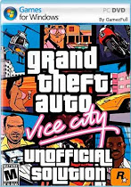

|
Grand Theft Auto: San Andreas (abreviado como GTA: San Andreas) es un videojuego de acción-aventura de mundo abierto de disparos en tercera persona desarrollado por Rockstar North y publicado por Rockstar Games. Fue confirmado oficialmente por la mencionada Rockstar Games a principios de marzo de 2004, y su fecha de lanzamiento tentativa se programó para el 19 y 22 de octubre de ese año para América del Norte y Europa. Distribuido por Take-Two Interactive, San Andreas fue lanzado originalmente para PlayStation 2 el 26 de octubre de 2004, aunque posteriormente se publicaron distintas versiones, tanto para videoconsolas de sexta, séptima y octava generación, así como ordenadores, y teléfonos inteligentes. |
Requisitos Recomendados
Procesador: Intel Pentium 4 ó AMD Athlon XP Procesador
Memoria: 384MB de RAM (the más the superior!)
Tarjeta gráfica: 128MB (or superior) Video Card (Geforce 6 Series Recomendados)
Disco duro: 4.7GB de free hard disk space (full install)
Tarjeta de sonido: DirectX 9 compatible Tarjeta de sonido (Sound Blaster Auidgy 2 Recomendados) |
Descargar |
|  |
Grand Theft Auto Vice City para PC es otra entrega de la serie muy popular de juegos que cuentan la historia del inframundo criminal, el juego amplía las ideas introducidas en la entrada anterior en el serio - Grand Theft Auto 3.El juego tiene lugar en los años ochenta en una nueva metrópolis llamada Vice City. Tommy Vercetti, el principal protagonista del juego, es enviado allí por Sonny Forelli para "cuidar" a las pandillas locales, a los gángsters cubanos ya los policías corruptos.
El juego, al igual que sus predecesores, consiste en una serie de misiones que combinadas crean una historia coherente y no lineal. El jugador está encargado de robo de vehículos, robos, asesinatos, entrega de paquetes valiosos, la plantación de bombas, etc - acciones típicas de un delincuente. Vice City es una metrópolis gigante y variada (llamada puerta de América del Sur y el Caribe). Aquí se pueden encontrar playas soleadas, instalaciones recreativas, centro de la ciudad lleno de gente con rascacielos y barrios bajos. Varias personas también se pueden encontrar en las ciudades de VC, desde Johns comunes a los políticos famosos.
El jugador puede moverse por la ciudad de varias maneras. Pocas docenas de vehículos pueden caer en las manos del jugador, incluyendo algunos de GTA3 y algunos completamente nuevos - por ejemplo Chevrolet Corvette.. |
Requisitos Recomendados
SO: Microsoft® Windows® 2000 / XP
Procesador: Procesador Intel Pentium III a 800 MHz
/ AMD Athlon a 800 MHz / Intel Celeron a 1.2 GHz / AMD Duron a 1.2 GHz
Memoria: 128 MB de RAM
Gráficos: Dispositivo de 32 MB con controladores compatibles |
Descargar |